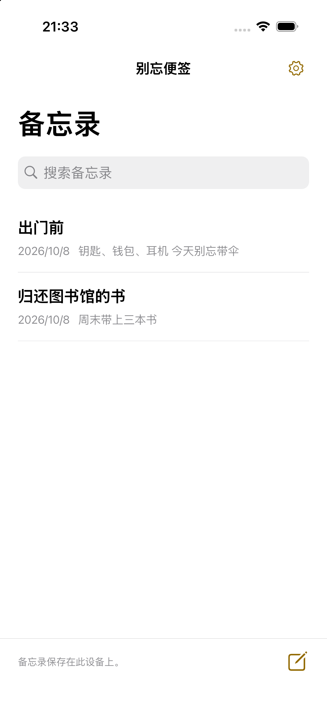

记录。选择。随时看见。
01
打开备忘录并输入，修改会自动保存。
02
点击便签中的“添加到主屏幕”，按设备提示添加小组件。
03
点击备忘录即可打开编辑页面。
简单记录，轻松阅读。
三种文字大小
标准、大、特大。较长的文字可点击查看全文。
让备忘录随手可见
无需注册，内容保存在设备上。删除后30天内可以恢复。
支持10种语言
日语、英语、韩语、简体中文、繁体中文、西班牙语、法语、德语、意大利语、巴西葡萄牙语。
广告
免费应用计划在备忘录列表下方显示一条横幅广告。编辑页面和小组件没有广告。广告加载失败也不影响使用。